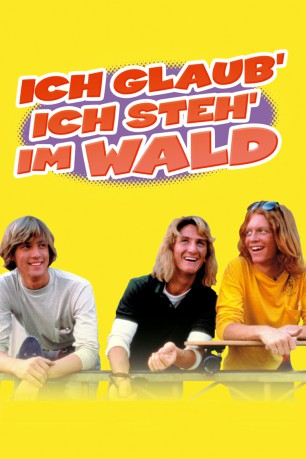

#6977 Ich glaub' ich steh' im Wald
Alternativ: Fast Times at Ridgemont High
 
 IMDB-Wertung: 7.2 / 10
IMDB-Wertung: 7.2 / 10  Metascore: 0
Metascore: 0 
Geschildert werden die Erlebnisse einer Clique während des letzten Semesters an der Ridgemont High in Kalifornien. Während sie im städtischen Einkaufszentrum ihr erstes Geld verdienen, kümmern sich die Jugendlichen vor allem um ihre sexuellen Erlebnisse und Liebesverwirrungen. Die schüchternen Stacy und Mark machen ihre ersten enttäuschenden Erfahrungen, bis sie sich ineinander verlieben. Ihre besten Freunde Linda und Mike halten sich für abgeklärt, erweisen sich aber angesichts von Rückschlägen nicht als reifer. Brad kümmert sich vor allem um seine Karriere und kommt im entscheidenden Moment seiner Schwester Stacy zu Hilfe. Jeff hingegen interessiert sich vor allem fürs Kiffen und Surfen und kommt so in einen Konflikt mit dem Lehrer Mr. Hand, der glaubt, jeder sei auf Drogen.
Jahr: 1982
Dauer: 89 Minuten
FSK: 12
Land: USA Studio: Universal PicturesTonspuren: DD2.0 - ,
Untertitel:
Auflösung: 1080p (1920x1040) Größe: 8130 MB
Genre: Drama, Komödie
Regisseur: Amy Heckerling
Drehbuch: Cameron Crowe
Soundtrack:
Darsteller:
 Sean Penn als Jeff Spicoli
Sean Penn als Jeff Spicoli Jennifer Jason Leigh als Stacy Hamilton
Jennifer Jason Leigh als Stacy Hamilton Judge Reinhold als Brad Hamilton
Judge Reinhold als Brad Hamilton- Robert Romanus als Mike Damone
- Brian Backer als Mark 'Rat' Ratner
- Phoebe Cates als Linda Barrett
 Ray Walston als Mr. Hand
Ray Walston als Mr. Hand Vincent Schiavelli als Mr. Vargas
Vincent Schiavelli als Mr. Vargas- Amanda Wyss als Lisa
- D.W. Brown als Ron Johnson
 Forest Whitaker als Charles Jefferson
Forest Whitaker als Charles Jefferson- Kelli Maroney als Cindy
 Eric Stoltz als Stoner Bud
Eric Stoltz als Stoner Bud James Russo als Robber
James Russo als Robber- James Bolt als Greg
 Nicolas Cage als Brad's Bud
Nicolas Cage als Brad's Bud Anthony Edwards als Stoner Bud
Anthony Edwards als Stoner Bud- Pamela Springsteen als Dina Phillips
 Sonny Carl Davis als Businessman
Sonny Carl Davis als Businessman- David Price als Desmond
- Shelly O'Neill als Perry's Pizza Waitress
- Martin Brest als Dr. Miller
- Taylor Negron als Pizza Guy
- Nancy Wilson als Beautiful Girl in Car
- David Resnik als Reeves Nevo & The Cinch
- Lana Clarkson als Mrs. Vargas
- Ava Lazar als Playmate
- Lori Sutton als Playmate
- April Audia als Mary Anne Zalotnick - Pat Benatar Wannabe , uncredited
 Scott Thomson als Arnold
Scott Thomson als Arnold- Tom Nolan als Dennis Taylor
- Blair Tefkin als Pat Bernardo
- Stanley Davis Jr. als Jefferson's Brother
- Reginald Farmer als Vice Principal
- Stuart Cornfeld als Pirate King
- Michael Wyle als Brad's Bud
- Patrick Brennan als Curtis Spicoli
- Julie Guilmette als Perry's Pizza Waitress
 Stu Nahan als Stu Nahan
Stu Nahan als Stu Nahan- Duane Tucker als Dr. Brandt
- Douglas Brian Martin als Angry Twin
- Steven M. Martin als Angry Twin
- Kenny Lawrence als Ticket Customer
- John Hollander als Ticket Customer
- Ricky Redlich als Ticket Customer
- Erick Leroy Burdette als Reeves Nevo & The Cinch
- David Doolittle als Reeves Nevo & The Cinch
- Tom B. Bralley als Reeves Nevo & The Cinch
- Reeves Nevo als Reeves Nevo & The Cinch
- Virginia Peters als Restaurant Waitress
Datei: X:\1982\Ich glaub' ich steh' im Wald (1982, FSK12, 1920x1040).mkv seit 15.09.2017
Festplatte: HD 1980-1986
 Es gibt insgesamt 31 Filme in der Gruppe '1982'
Es gibt insgesamt 31 Filme in der Gruppe '1982'